Fort Worth Eats
Welcome 🍽️
Hi again! This page will include my personal favorite spots to get food in Fort Worth. Breakfast, lunch and dinner I have chosen my favorites and I also included runner ups! For TCU students scroll to the bottom to find the best spots closest to you! I was able to find these recommendations from social media platforms, reviews and word of mouth!
Best Breakfast Spot 🥐
Press Cafe
Location: Across from the Clearfork area, it's easy to walk over and shop around after breakfast.
Photos
A few photos from Press Cafe
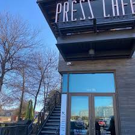
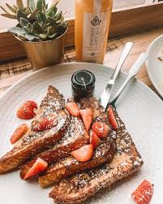
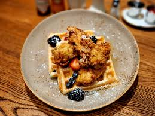
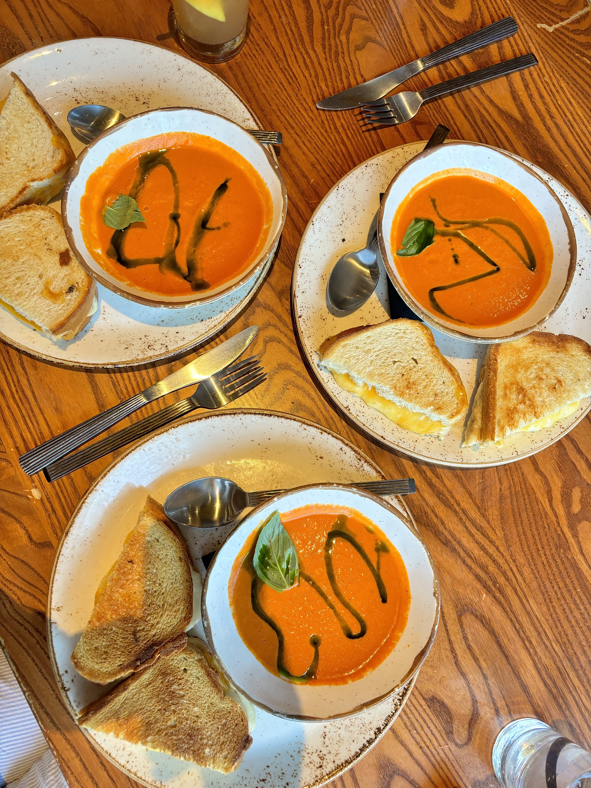
Best Lunch Spot 🥗
Eatzi's Market & Bakery
Atmosphere: It's such a casual place and you can take it to go or dine in on their outdoor patio!
Honorable mention: They have an amazing Arnold Palmer.
Photos
A few photos from Eatzi's
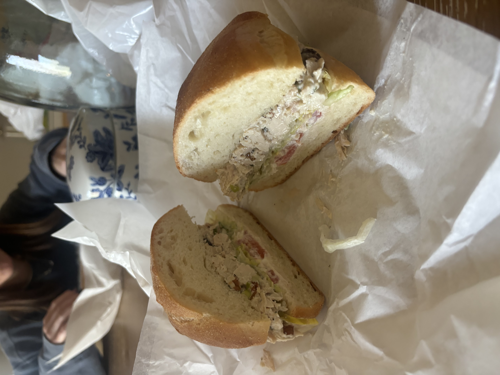
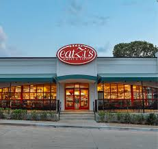
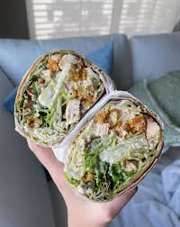
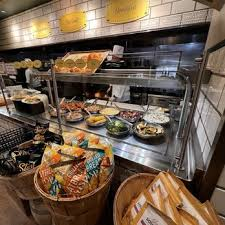
Best Dinner Spot 🍽️
Paloma Suerte
Why it stands out: It's great Mexican food and they have great cocktail options too for 21+ guests. The Stockyards is the most iconic area in Fort Worth and Paloma Suerte makes it an even better destination.
Drink recommendation: For those 21+, try the Palomacello Spritz.
Photos
A few photos from Paloma Suerte
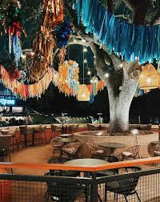
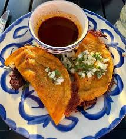
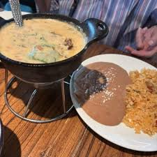
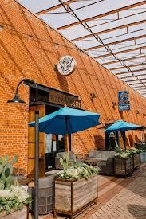
Honorable Mentions ⭐
Breakfast: Ascension, Snooze AM Eatery, and The Social House.
Lunch: Woodshed Smokehouse, Maggies R&R, and HG Supply.
Dinner: Lucille's, Hudson House, Doc B's, and Blue Sushi Sake Grill.
Best for TCU Students 🎓
Breakfast: Old South Pancake House is only a 5 minute drive from campus and under a 15 minute walk. Old South has been serving TCU students since 1962 and has a huge menu with affordable prices.
Lunch: Even though I'm biased, Eatzi's is my personal favorite. It's also a 5 minute drive from campus and under a 15 minute walk. If you're looking for something even closer to campus, Jon's Grille is a great spot with delicious appetizers and a wide selection of burgers and sandwiches.
Dinner: Woodshed Smokehouse has an incredible atmosphere and is about a 10 to 15 minute walk to school and under a 5 minute drive.